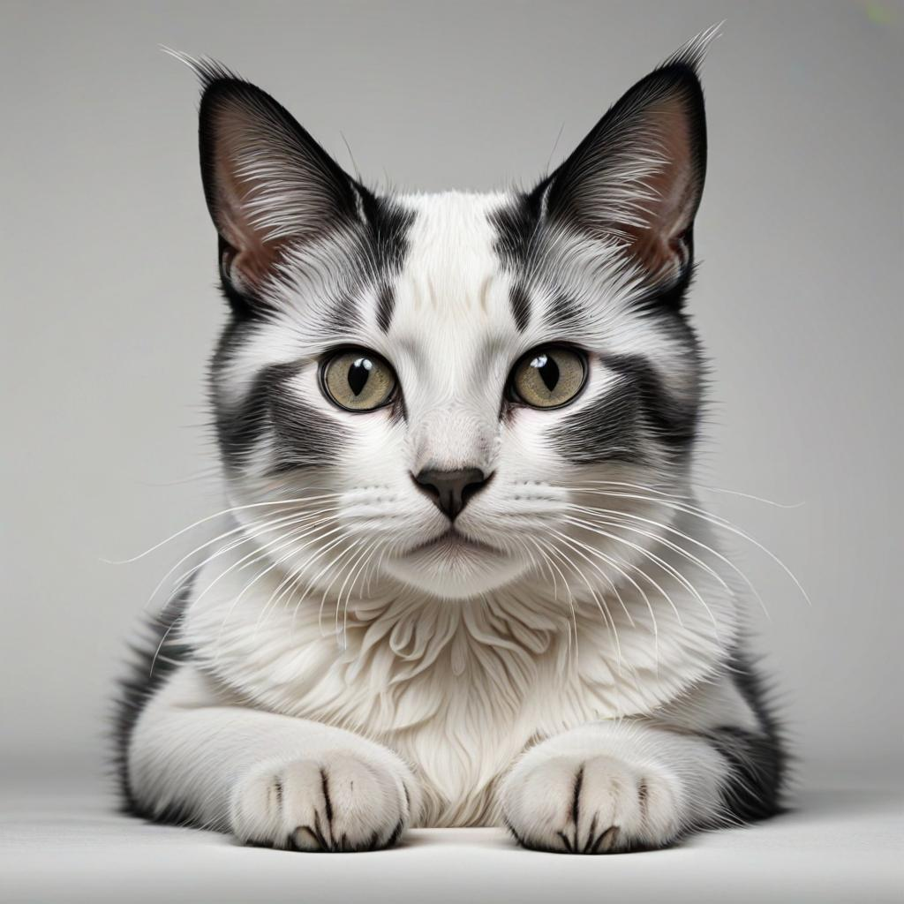

Contenido
Mision
La mision de Garras es que mantiene un compromiso inquebrantable con el cuidado y la salud de las mascotas, ofreciendo una amplia gama de servicios veterinarios de alta calidad. Su equipo profesional se esfuerza por brindar atención individualizada y consejos prácticos para garantizar el bienestar de perros y gatos. Además, en su portal en línea, los dueños de mascotas pueden acceder a recursos informativos sobre consultas, vacunaciones, cirugías y más. Garras es el aliado perfecto para quienes buscan lo mejor para sus compañeros peludos.
Vision
El sitio web Garras veterinaria se destaca por su dedicación al bienestar de las mascotas y por ofrecer una amplia gama de servicios veterinarios. Con un equipo profesional comprometido, Garras brinda consultas, vacunaciones, cirugías y consejos útiles para el cuidado diario de perros y gatos. Su portal en línea es una fuente confiable de información para los amantes de las mascotas que buscan lo mejor para sus compañeros peludos. ¡Explora todo lo que Garras tiene para ofrecer!